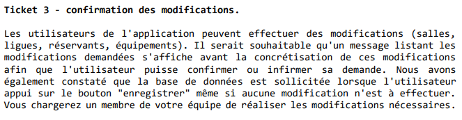
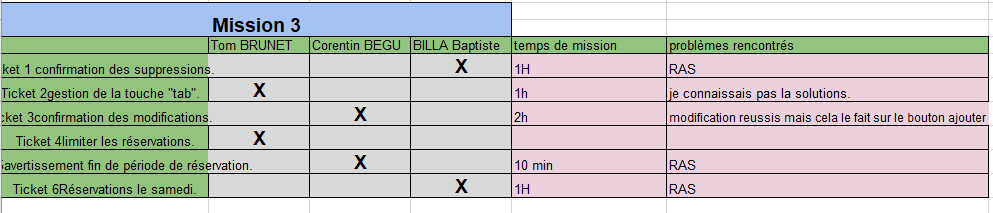

AP 1.2 - Réservation salles - Partie 3
Votre équipe doit modifier l'application afin de répondre aux attentes formulées
dans les différents tickets reçus.
Il vous est également demandé, pour chaque dysfonctionnement ou imperfection de
rédiger une courte note détaillant les points suivants :
Causes du problème.
Liste des solutions possibles pour résoudre le problème.
Présentation de la solution choisie (justifier votre choix et expliquer
les opérations réalisées).
Mise en commun avec le tableau de synthese
Gérer le patrimoine informatique
on a en tant que ressources numériques : le cahier des charges, L'exécutable de l'application et La fiche de présentation de Git.
Répondre aux incidents et aux demandes d’assistance et d’évolution
votre équipe devra modifier l'application pour répondre aux attentes exprimées dans les tickets reçus. Pour chaque dysfonctionnement ou imperfection, vous devrez fournir une note détaillée comprenant les causes du problème, une liste de solutions possibles, ainsi que la présentation de la solution choisie avec une justification et une explication des opérations réalisées.
exemple de ticket :

reponse du ticket ticket :

Travailler en mode projet
Grace au cahier des charges, une listes des taches nous a été donné. On les a donc analysés pour définir les ressources nécessaires puis on les a mis dans un tableau.
Grace au tableau et aux taches on a donc attribué ce que devait faire les personnes du groupe. Puis cela a permis de nous organiser et réaliser l’AP dans les temps.
En voyant le temps passé sur les taches, j’ai pu définir la difficulté de la tâche plus je passais du temps dessus plus elle était compliquée.
